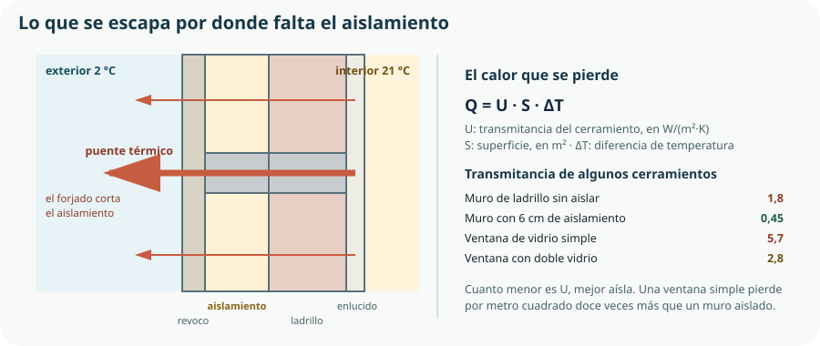

La climatización es el mayor consumo de una vivienda española —en torno al 45 % del total—, y es también el que más depende de decisiones que se toman antes de comprar ningún equipo. Este tema desarrolla la idea del segundo escalón del Tema 20: actuar sobre la demanda antes que sobre el suministro. Un aparato eficiente calentando una casa sin aislar sigue siendo un despilfarro caro.
- explicar por qué se actúa sobre la demanda antes que sobre el equipo;
- distinguir conducción, convección y radiación e identificarlas en una vivienda;
- interpretar la transmitancia de un cerramiento y comparar soluciones constructivas;
- calcular la pérdida de calor de un cerramiento y de una vivienda completa;
- identificar puentes térmicos y explicar sus consecuencias, incluidas las condensaciones;
- hacun balance energético sencillo con pérdidas, ganancias y demanda;
- comparar equipos de climatización por su rendimiento y explicar qué es una bomba de calor;
- aplicar criterios de uso eficiente con datos, y desmontar los que no ahorran;
- describir las estrategias de la arquitectura bioclimática y ordenar una rehabilitación energética.
1. Primero la demanda, después el equipo
La demanda de una vivienda es la energía que necesita para mantener una temperatura de confort. Depende del edificio; no del aparato. Y es la magnitud sobre la que hay que actuar primero.
Reducir la demanda
Aislar, sellar, proteger del sol, aprovechar la orientación. Actúa sobre la causa, dura décadas, no consume nada y mejora el confort además de la factura.
Mejorar el equipo
Cambiar la caldera por una bomba de calor. Actúa sobre el efecto, es más rápido y más barato de acometer, y depende de un aparato que habrá que reponer en quince años.
2. Cómo se transmite el calor
| Mecanismo | Cómo funciona | En la vivienda | Se combate con… |
|---|---|---|---|
| Conducción | El calor atraviesa un material sin que la materia se mueva. | A través de muros, ventanas, suelos y cubierta. | Aislamiento: materiales de baja conductividad. |
| Convección | Un fluido en movimiento transporta el calor. | Infiltraciones de aire, corrientes junto a las ventanas, el propio radiador. | Estanqueidad al aire y ventilación controlada. |
| Radiación | Transmisión por ondas, sin necesidad de medio. | El sol entrando por la ventana; tu cuerpo hacia una pared fría. | Protección solar en verano; aprovecharla en invierno. |
3. Aislamiento y transmitancia
La transmitancia térmica U mide cuánto calor atraviesa un cerramiento por cada metro cuadrado y por cada grado de diferencia de temperatura. Es el número que caracteriza a un muro, una ventana o una cubierta, y cuanto menor, mejor aislado.
Q = U · S · ΔT Q en W, U en W/(m²·K), S en m², ΔT en K o °C

Un cálculo completo
| Cerramiento | S (m²) | U sin aislar | Q sin aislar | U aislado | Q aislado |
|---|---|---|---|---|---|
| Fachada | 70 | 1,80 | 2 394 W | 0,45 | 599 W |
| Cubierta | 90 | 1,60 | 2 736 W | 0,35 | 599 W |
| Ventanas | 14 | 5,70 | 1 516 W | 1,60 | 426 W |
| Suelo | 90 | 1,20 | 2 052 W | 0,50 | 855 W |
| Total por transmisión | — | — | 8 698 W | — | 2 479 W |
4. Puentes térmicos y estanqueidad
Un puente térmico es una zona del cerramiento por la que el calor escapa mucho más deprisa que por el resto: normalmente porque el aislamiento se interrumpe.
| Puente térmico | Por qué se produce | Cómo se corrige |
|---|---|---|
| Frente de forjado | El canto del forjado corta la capa de aislamiento. | Aislamiento continuo por el exterior de la fachada. |
| Pilares en fachada | El hormigón conduce mucho mejor que el ladrillo. | Aislar por fuera, sin interrupciones. |
| Cajas de persiana | Hueco sin aislar y con paso de aire. | Aislar y sellar la caja, o sustituirla. |
| Contorno de ventanas | El encuentro de carpintería y muro rompe la continuidad. | Solapar el aislamiento con el marco. |
| Balcones y voladizos | La losa sale al exterior y actúa de aleta refrigeradora. | Rotura de puente térmico en el arranque de la losa. |
Estanqueidad al aire
Una vivienda puede estar perfectamente aislada y perder mucho calor por infiltraciones: el aire caliente se escapa por las rendijas y entra aire frío. Es transmisión por convección, y en viviendas antiguas puede suponer del 20 al 40 % de la pérdida total.
5. Balance energético de una vivienda
El balance es la cuenta de todo lo que entra y sale. Con él se dimensiona el equipo y se estima el consumo, y es el cálculo que el criterio 6.2 permite comprobar.
demanda = pérdidas − ganancias en invierno; en verano se invierten los papeles
| Concepto | Origen | Potencia |
|---|---|---|
| Pérdidas por transmisión | Muros, cubierta, ventanas y suelo. | −2 479 W |
| Pérdidas por ventilación | Renovación de aire, 0,6 renovaciones por hora. | −870 W |
| Ganancias internas | Personas, iluminación y electrodomésticos. | +400 W |
| Ganancias solares | Sol que entra por las ventanas, en media de invierno. | +300 W |
| Demanda de calefacción | — | 2 649 W |
6. Equipos de climatización
| Sistema | Rendimiento | Energía que usa | Observaciones |
|---|---|---|---|
| Radiador eléctrico | ≈ 1,00 | Electricidad | Convierte toda la electricidad en calor, y aun así es el más caro por la diferencia de precio del kWh. |
| Caldera de gas de condensación | 0,95–1,05 | Gas natural | Aprovecha además el calor latente de los gases de escape. |
| Caldera de biomasa | 0,85–0,92 | Pélets o astilla | Renovable, con logística de combustible y espacio de almacenamiento. |
| Bomba de calor aire-aire | SCOP 3–4,5 | Electricidad | Rinde más de 1 porque no genera calor: lo mueve. También refrigera. |
| Bomba de calor geotérmica | SCOP 4–5,5 | Electricidad | Aprovecha la temperatura estable del terreno. Inversión alta. |
| Solar térmica | — | Sol | Para agua caliente sanitaria; apoyo, no sistema único. |
7. Uso eficiente de la climatización
| Medida | Efecto | Coste |
|---|---|---|
| Bajar el termostato 1 °C en invierno | Unos 7 % de la calefacción | Nada |
| Ajustar a 19–21 °C en invierno y 25–26 °C en verano | Hasta 15–20 % | Nada |
| Programar por horas y por zonas | 10–20 % | Termostato programable, 30–120 € |
| Purgar radiadores y no taparlos con muebles | 5–10 % | Nada |
| Cerrar persianas y cortinas por la noche en invierno | Reduce la pérdida por las ventanas | Nada |
| Protección solar exterior en verano | Hasta 30 % de la refrigeración | Toldo o persiana exterior |
| Ventilar poco tiempo y con las ventanas muy abiertas | Renueva el aire sin enfriar los muros | Nada |
| Mantenimiento: limpiar filtros del equipo | 5–15 % | Nada |
8. Arquitectura sostenible: bioconstrucción y ecoarquitectura
El currículo nombra las dos. Conviene distinguirlas, porque se usan como sinónimos y no lo son.
Arquitectura bioclimática
Diseñar el edificio para que el clima trabaje a favor: orientación, protección solar, inercia, ventilación natural. Es estrategia de diseño, y casi no cuesta dinero si se decide a tiempo.
Bioconstrucción
Emplear materiales naturales, locales y de bajo impacto: madera, tierra, cal, corcho, paja. Es una decisión de materiales, del Tema 5.
La ecoarquitectura o arquitectura sostenible engloba las dos y añade el ciclo de vida completo del edificio: su construcción, su uso, su mantenimiento y su derribo.
Las estrategias bioclimáticas, y todas son gratis si se decide antes de construir
Orientación
Huecos grandes al sur, pequeños al norte. En el hemisferio norte el sol de invierno entra bajo por el sur y calienta; el norte solo pierde.
Protección solar
Un alero bien dimensionado deja entrar el sol de invierno, que llega bajo, y detiene el de verano, que llega alto. La misma ventana, comportamiento opuesto según la estación.
Inercia térmica
Muros pesados que acumulan calor y lo devuelven horas después: amortiguan la oscilación entre el día y la noche. Decisivo en climas continentales como el de Madrid.
Ventilación natural
Huecos en fachadas opuestas para ventilación cruzada, y ventilación nocturna en verano para descargar el calor acumulado.
Vegetación
Un árbol de hoja caduca al sur da sombra en verano y deja pasar el sol en invierno. Es protección solar que se autorregula.
Compacidad
Menos superficie de envolvente para el mismo volumen significa menos pérdidas: por eso un piso intermedio consume menos que una casa aislada de la misma superficie.
9. Rehabilitación energética
La mayoría de las viviendas españolas se construyeron antes de que hubiera exigencia alguna de aislamiento. En un edificio existente no se puede cambiar la orientación, pero casi todo lo demás sí, y hay un orden correcto de intervención.
Medir antes de decidir: consumo real, temperaturas, cámara termográfica si se dispone de ella. Sin diagnóstico se acierta por casualidad.
Rendijas, cajas de persiana, pasos de instalaciones. Es lo más barato y de las que más se nota.
La mejor relación coste-efecto de todas: el calor se va sobre todo por arriba y la cubierta suele ser accesible.
Carpintería con rotura de puente térmico y doble vidrio bajo emisivo. Es lo que más pierde por metro cuadrado.
Por el exterior si es posible, para resolver los puentes térmicos de una vez. Es la intervención más cara y la más transformadora.
Obligatoria una vez sellada la vivienda, y con recuperador de calor si cabe.
Con la demanda ya reducida, el equipo necesario es más pequeño, más barato y funciona mejor.
Comprueba lo que has aprendido
Este tema se demuestra con un balance energético calculado y una propuesta de mejora ordenada.
| Aspecto | Qué debes demostrar | Evidencias posibles |
|---|---|---|
| Transmisión del calor | Que identificas los tres mecanismos en una vivienda real. | Análisis de un aula o una vivienda con los tres mecanismos localizados y la medida que ataca cada uno. |
| Transmitancia | Que calculas pérdidas por cerramiento y comparas soluciones. | Tabla de pérdidas antes y después de aislar, con la potencia del equipo necesaria en cada caso. |
| Puentes térmicos | Que los localizas y relacionas con las condensaciones. | Tres puentes térmicos identificados en un edificio real y su corrección propuesta. |
| Balance | Que haces el balance completo con pérdidas y ganancias. | Balance de invierno con ventilación y ganancias internas y solares, y demanda resultante. |
| Equipos | Que comparas sistemas por rendimiento y por coste de la energía que usan. | Comparación de radiador eléctrico, caldera y bomba de calor con el coste anual de cada uno. |
| Estrategias pasivas | Que dimensionas al menos una estrategia bioclimática con geometría. | Alero calculado con los ángulos solares de invierno y de verano de tu localidad. |
| Rehabilitación | Que ordenas las intervenciones y justificas por qué el equipo va al final. | Plan de rehabilitación de un edificio real con las siete etapas y su coste estimado. |
Medida que convence a cualquiera: con un termómetro de infrarrojos, mide la temperatura de la pared interior de una fachada, de una esquina y del contorno de una ventana en un día frío. Las diferencias que encontrarás son los puentes térmicos de la sección 4, y explican a la vez la factura y las manchas de humedad.
Glosario del tema
- Arquitectura bioclimática
- Diseño del edificio para aprovechar el clima del lugar: orientación, protección solar, inercia y ventilación.
- Bioconstrucción
- Construcción con materiales naturales, locales y de bajo impacto ambiental.
- Bomba de calor
- Equipo que transporta calor de un medio a otro en lugar de generarlo, con lo que entrega más energía de la que consume.
- Carga latente
- Parte de la carga de refrigeración destinada a condensar el vapor de agua del aire.
- Compacidad
- Relación entre el volumen de un edificio y la superficie de su envolvente.
- Condensación
- Paso del vapor de agua a líquido al tocar una superficie fría; causa de manchas y moho.
- Conducción
- Transmisión de calor a través de un material sin movimiento de materia.
- Convección
- Transmisión de calor mediante el movimiento de un fluido.
- Demanda
- Energía que un edificio necesita para mantener las condiciones de confort; depende del edificio, no del equipo.
- Ecoarquitectura
- Enfoque que integra diseño bioclimático, materiales de bajo impacto y ciclo de vida del edificio.
- Envolvente
- Conjunto de cerramientos que separan el interior del exterior.
- Estanqueidad al aire
- Grado en que un edificio impide el paso incontrolado de aire.
- Inercia térmica
- Capacidad de un elemento constructivo de acumular calor y devolverlo con retardo.
- Infiltración
- Entrada o salida de aire no controlada por rendijas y juntas.
- Puente térmico
- Zona de la envolvente por la que el calor escapa más deprisa, normalmente por interrupción del aislamiento.
- Radiación
- Transmisión de calor por ondas electromagnéticas, sin necesidad de medio material.
- Recuperador de calor
- Dispositivo que precalienta el aire de ventilación entrante con el calor del aire que sale.
- Rehabilitación energética
- Conjunto de intervenciones que reducen la demanda y el consumo de un edificio existente.
- SCOP
- Rendimiento estacional de una bomba de calor en calefacción, promediado sobre toda la temporada.
- Transmitancia térmica
- Calor que atraviesa un cerramiento por metro cuadrado y grado de diferencia de temperatura; cuanto menor, mejor aísla.
Resumen esencial
- Se actúa primero sobre la demanda y después sobre el equipo: aislar ahorra dos veces, porque reduce el consumo y permite un equipo más pequeño.
- El confort depende de cinco factores, no solo de la temperatura del aire; por eso aislar se nota más que subir el termostato.
- El calor se transmite por conducción, convección y radiación, y cada mecanismo se combate con una medida distinta.
- Un aislante funciona porque atrapa aire inmóvil, y por eso un aislante mojado deja de aislar.
- La transmitancia U caracteriza un cerramiento: cuanto menor, mejor. Aislar puede dividir las pérdidas por tres.
- Las ventanas son el punto más débil por metro cuadrado: un 5 % de la envolvente puede aportar el 17 % de las pérdidas.
- El espesor de aislante tiene rendimiento decreciente: existe un óptimo y el Código Técnico fija los mínimos por zona climática.
- La consecuencia peor de un puente térmico no es la energía: son las condensaciones y el moho.
- Estanqueidad no es dejar de ventilar: se sella bien y se ventila a propósito, mejor con recuperador de calor.
- El balance energético resta las ganancias internas y solares de las pérdidas, y esas ganancias pueden cubrir una cuarta parte de la demanda.
- En verano hay una carga adicional que en invierno no existe: la humedad que hay que condensar.
- Una bomba de calor rinde más de 1 porque transporta calor en lugar de generarlo, y su rendimiento baja cuando más frío hace.
- El rendimiento del aparato no basta para comparar: hace falta el precio de la energía que consume.
- Poner el termostato más alto no calienta más rápido, y ventilar mucho tiempo enfría los muros.
- La arquitectura bioclimática es estrategia de diseño y la bioconstrucción es elección de materiales; la ecoarquitectura engloba las dos.
- Un alero bien dimensionado protege en verano y deja pasar el sol en invierno sin motores ni mantenimiento.
- En una rehabilitación el equipo se cambia al final, para no sobredimensionarlo para una demanda que va a desaparecer.
Fuentes y recursos fiables
- [1] IDAE. Guías de eficiencia energética en edificios, consumos por uso y rehabilitación.
- [2] Código Técnico de la Edificación. Documento Básico de Ahorro de Energía: transmitancias límite por zona climática y exigencias de ventilación.
- [3] Ministerio para la Transición Ecológica y el Reto Demográfico. Estrategia de rehabilitación energética del parque edificado.
- [4] AEMET. Datos climáticos de la localidad: temperaturas, radiación y grados-día, necesarios para el balance.
- [5] UNE — Asociación Española de Normalización. Cálculo de la transmitancia térmica de cerramientos (UNE-EN ISO 6946).
- [6] Decreto 64/2022, de 20 de julio (BOCM). Currículo de Tecnología e Ingeniería I, bloque G: climatización, aislamiento y arquitectura sostenible.